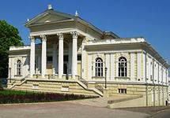

Археологічний музей

Одеський археологічний музей
Одеський археологічний музей НАН України - найстаріший в Україні археологічний музей, науково-дослідний інститут Відділення історії, філософії та права НАН України входить до складу Південного наукового центру НАН України та МОН України.
Був заснований у 1825 році як Одеський міський музей старовини. Його розвитку сприяло створене 1839 Одеське суспільство історії та старожитностей, що мало право вести розкопки на півдні Російської імперії.
Основний фонд музею є найбільшою колекцією (більше 170 тисяч) експонатів з давньої історії Північного Причорномор'я, у тому числі 55 000 монет, єдина в Україні колекція пам'яток Стародавнього Єгипту, всього в країні зібрання античних раритетів.
назад